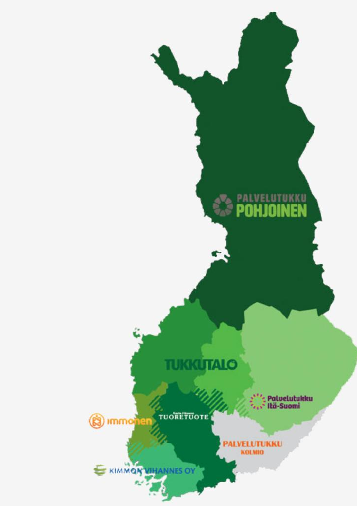

Patu-verkosto
Patu-tukut lähellä asiakasta

Palvelutukkureiden ketjuun kuuluu seitsemän Patu-palvelutukkuria. Meillä on yhteensä 10 toimipistettä eri puolilla Suomea sekä pääkonttori Vantaalla.
Lähellä asiakasta sijaitseva tukkuliike tuntee oman alueensa ja pystyy näin palvelemaan parhaiten asiakkaitaan sekä välittämään lähellä tuotettuja tuotteita asiakkaille. Samalla jakelusta aiheutuva hiilijalanjälki jää mahdollisimman pieneksi.
Asiakkaamme ovat
- julkiset laitokset
- henkilöstöravintolat
- ravintolat
- hotellit
- baarit ja kahvilat
- pito- ja ateriapalvelut
- vähittäiskauppa
Tuotevalikoimamme on kattava
- tuoreet kasvikset
- esikäsitellyt kasvikset
- pakasteet
- maito- ja rasvatuotteet
- säilykkeet
- myllytuotteet
- mehut ja juomat
- alkoholijuomat
- mausteet
- kattaustarvikkeet ja pehmopaperit
Ota yhteyttä
Satakunta
Pori
Helmentie 7, 28360 Pori
Puh. 02 631 2100
myynti@immosentukku.fi
Puh. 02 631 2100
myynti@immosentukku.fi
KIMMON VIHANNES OY
Lounais-Suomi & Länsi-Uusimaa
Kuusjoki
Jalontie 39, 25330 Kuusjoki
Puh. 02 727 4400
tilaus@kimmonvihannes.fi
Puh. 02 727 4400
tilaus@kimmonvihannes.fi

Hämeenlinna
Sähkömestarintie 7, 13130 Hämeenlinna
Puh. 03 612 0301
myynti@tuoretuote.com
Puh. 03 612 0301
myynti@tuoretuote.com

Lahti
Paanakatu 8, 15150 Lahti
Puh. 03 871 370
myynti@palvelutukkukolmio.fi
Puh. 03 871 370
myynti@palvelutukkukolmio.fi
Itä-Suomi
Mikkeli
Pomonkatu 5, 50150 Mikkeli
Puh. 020 729 9920
mikkeli@palvelutukkuitasuomi.fi
Puh. 020 729 9920
mikkeli@palvelutukkuitasuomi.fi
Kuopio
Asevarikontie 15, 70800 Kuopio
Puh. 020 729 9921
kuopio@palvelutukkuitasuomi.fi
Puh. 020 729 9921
kuopio@palvelutukkuitasuomi.fi
Pohjois-Suomi
Oulu
Merilinja 6, 90400 Oulu
Puh. 08 535 2600
myynti@palvelutukkupohjoinen.fi
Puh. 08 535 2600
myynti@palvelutukkupohjoinen.fi
Kuusamo
Kitkantie 135, 93600 Kuusamo
Puh. 08 853 030
myynti.kuusamo@palvelutukkupohjoinen.fi
Puh. 08 853 030
myynti.kuusamo@palvelutukkupohjoinen.fi

Seinäjoki
Tuottajantie 41, 60100 Seinäjoki
Puh. 06 4210 210
myynti@tukkutalo.fi
Puh. 06 4210 210
myynti@tukkutalo.fi
Jyväskylä
Onkapannu 2, 40700 Jyväskylä
Puh. 06 4210 230
myynti@tukkutalo.fi
Puh. 06 4210 230
myynti@tukkutalo.fi